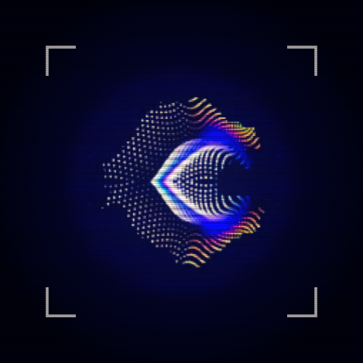

Leg ein Bild auf die Werkbank: Es zerfällt in seine Teile, ordnet sich neu, hinterlässt Spuren und setzt sich am Ende neu zusammen. Eine Animation von 30 Sekunden, sechs Standbilder und ein Video.
- Auf dem Startbildschirm, als eigenes Symbol
- Läuft nach dem ersten Öffnen auch ohne Netz
- Dein Bild bleibt auf dem Gerät